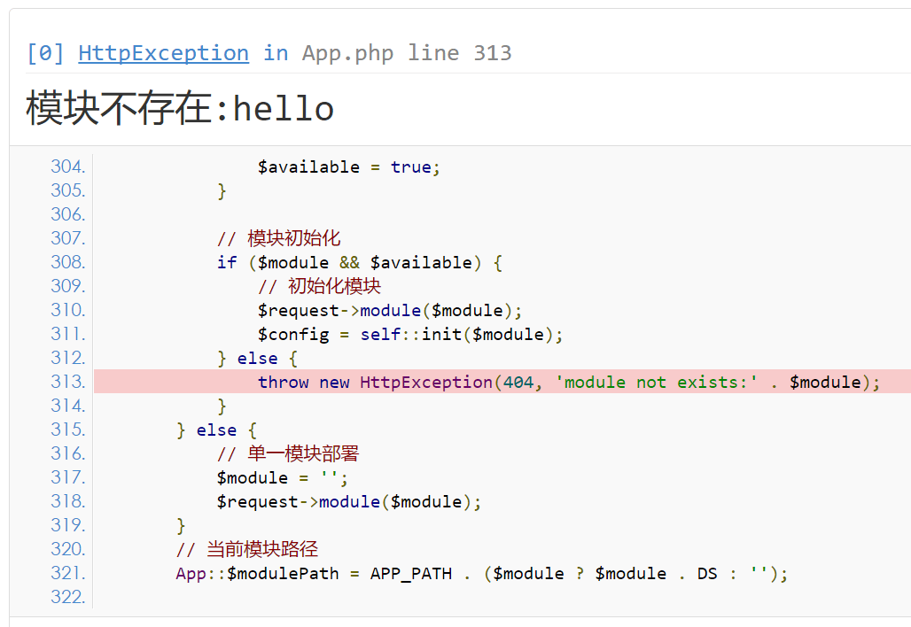

和PHP默认的异常处理不同，ThinkPHP抛出的不是单纯的错误信息，而是一个人性化的错误页面。
在调试模式下，系统默认展示的错误页面：

只有在调试模式下面才能显示具体的错误信息，如果在部署模式下面，你可能看到的是一个简单的提示文字，例如：
本着严谨的原则，5.0版本默认情况下会对任何错误（包括警告错误）抛出异常，如果不希望如此严谨的抛出异常，可以在应用公共函数文件中或者配置文件中使用
error_reporting方法设置错误报错级别（请注意，在入口文件中设置是无效的），例如：
// 异常错误报错级别,
error_reporting(E_ERROR | E_PARSE );框架支持异常页面由开发者自定义类进行处理，需要配置参数exception_handle
// 异常处理handle类 留空使用 \think\exception\Handle
'exception_handle' => '\\app\\common\\exception\\Http',自定义类需要继承Handle并且实现render方法，可以参考如下代码：
<?php
namespace app\common\exception;
use Exception;
use think\exception\Handle;
use think\exception\HttpException;
class Http extends Handle
{
public function render(Exception $e)
{
if ($e instanceof HttpException) {
$statusCode = $e->getStatusCode();
}
//TODO::开发者对异常的操作
//可以在此交由系统处理
return parent::render($e);
}
}需要注意的是，如果配置了'exception_handle'，且没有再次调用系统
render的情况下，配置http_exception_template就不再生效，具体可以参考Handle类内实现的功能。
一旦关闭调试模式，发生错误后不会提示具体的错误信息，如果你仍然希望看到具体的错误信息，那么可以如下设置：
// 显示错误信息
'show_error_msg' => true, 可以使用PHP的异常捕获进行必要的处理，但需要注意一点，在异常捕获中不要使用think\Controller类的error、success和redirect方法，因为上述三个方法会抛出HttpResponseException异常，从而影响正常的异常捕获，例如：
try{
Db::name('user')->find();
$this->success('执行成功!');
}catch(\Exception $e){
$this->error('执行错误');
}应该改成
try{
Db::name('user')->find();
}catch(\Exception $e){
$this->error('执行错误');
}
$this->success('执行成功!');